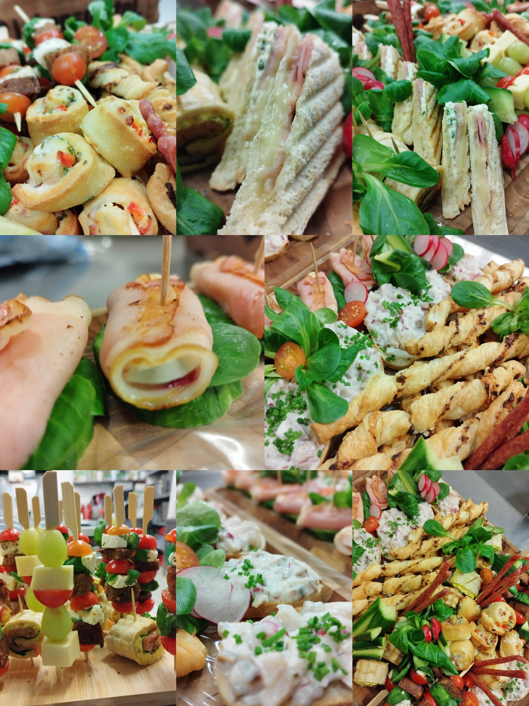
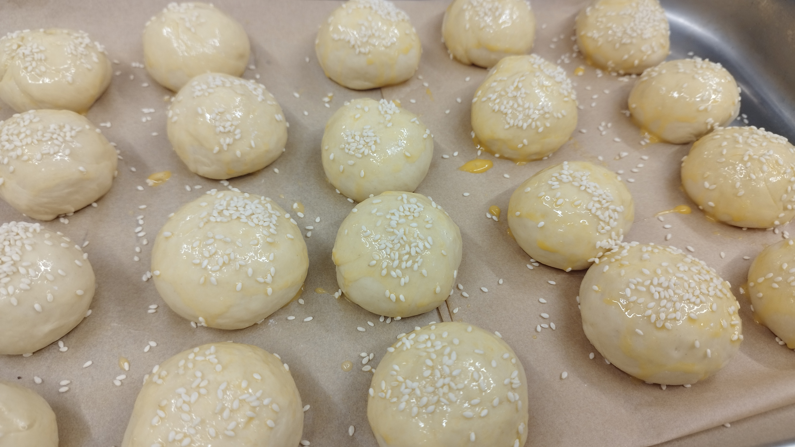

Frisch gekocht — für unsere Kinder.
Mittagessen für Schule, Kindergarten und Krippe. Jeden Tag warm, hausgemacht und herzlich serviert.
Für die Grundschule Markersdorf und die Kindergärten in Markersdorf, Friedersdorf und Jauernick.
035829 / 139993Eine Küche, in der du spürst, dass es jemandem wichtig ist.
Regional & saisonal
Zutaten aus der Umgebung. So frisch wie möglich. So nah wie möglich.
Mit Herz gekocht
Hausgemacht nach bewährten Rezepten. Tag für Tag. Ohne Abkürzungen.
Für jeden etwas
Täglich 1. & 2. Wahlessen — meist eine fleisch- und eine vegetarische Variante.
Fester Tagespreis
Ein Mittagessen, ein Preis — egal welches Gericht. Klar und planbar.

Unser Wochenplan
Was diese Woche täglich aus der Küche kommt. Den vollständigen Monatsplan und den Bestellabschnitt findest du auf der Speiseplan-Seite.
Änderungen vorbehalten — den vollständigen Speiseplan inkl. Allergenen findest du hier.

Mittagessen wie zuhause — jeden Tag.Unser Versprechen
Eine Küche, gewachsen aus Herzblut.
Die Schulküche Markersdorf kocht jeden Tag frisch — direkt aus der Kirchstraße 49, Tür an Tür mit der Grundschule. Für die Kinder hier vor Ort und in den Kindergärten in Markersdorf, Friedersdorf und Jauernick.
täglich beliefert
warm serviert
ein Preis pro Tag
Wir kochen, was uns selbst schmeckt: handfest, hausgemacht, ohne Schnickschnack. Was nicht aus der Region kommt, kaufen wir mit Bedacht. Was möglich ist, machen wir selbst.
Wir kochen täglich für diese Einrichtungen
Mittagessen Mo–Fr von 11:00 bis 13:30, fester Tagespreis — egal welches Gericht. Für Catering-Anfragen sind wir auch da.
Zum KontaktWas bei uns auf den Teller kommt.
Kind anmelden, Speiseplan ansehen — wir machen den Rest.
Bereits Kunde? Über die Eltern-App kannst du dein Kind ab- oder anmelden, den Speiseplan einsehen und deine Rechnung abrufen — bequem von zuhause. Neue Familien melden sich einfach per Kontaktformular oder Anruf.